Journal Week 37
Table of Contents
Referencias
2026-09-07
[09:08]
Reunión sobre setup:
- Hacer análisis por wavelets con soluciones de Burgers, Daubechies.
- Segmentar la superficie libre
- Habría que repetir con agua limpia.
- Mandar a imprimir rampas 1:35 y 1:27.5.
- Mandar espaciador nuevo.
- Algo de soluciones.
[10:51]
Estas son los scalings de las funciones de structura para el rango entre 100 y 200 mns (en lugar de llegar hasta 250 ms).
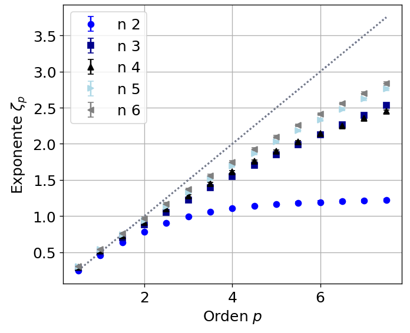
Y los parámetros de los ajustes:
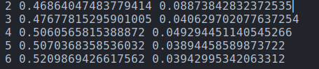
[11:21]
Esto para el primer sensor entre 100 y 250 ms:
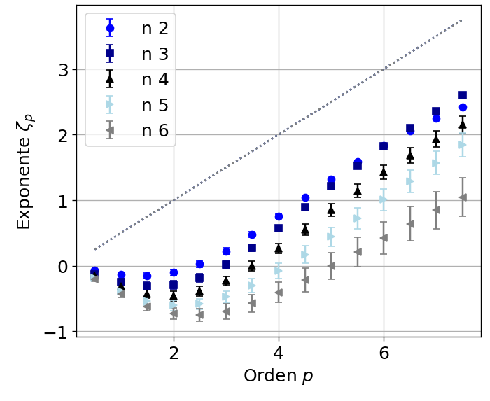
Y sus parámetros:
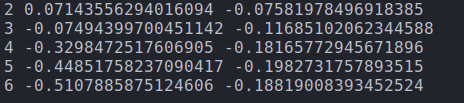
2026-09-10
[11:55]
A continuación un ajuste de una onda individual de la primera iteración por la solución de onda de choque que propone Bonneton en (Bonneton 2023):
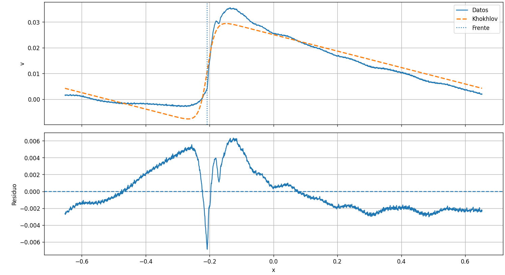
Algo importante es que pareciera ser que la coordenada espacial de Burgers la asumimos como nuestra coordenada temporal, mediante algo parecido a la hipótesis de Taylor, diciendo que varía lentamente la batimetría, entonces es Shallow sin dispersión y la frecuencia y el número de onda se relacionan mediante cierta celeridad media. En ese caso para testear las cosas estadísticas como los espectros y scalings de las funciones de estucrtura basta con dedjar evolucionar en el solver pseudoespectral una condición inicial de ruido, sin tener que meterse en un forzado temporal.
[12:21]
Tengo que probar promediando sobre varias olas, por si es simplemente el fondo la desviación de la solución de Burgers.
[15:37]
Esto es la media cada 15 segundos de la señal de las primeras mediciones con un único sensor.
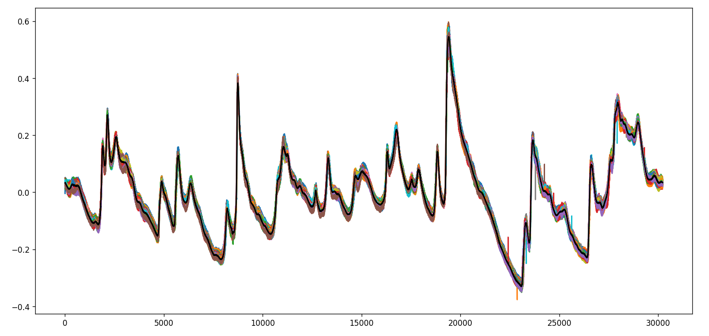
[15:41]
Y acá el ajuste, la bara es la desviación estándar, la versión con dividido \(N\) era inapreciable:
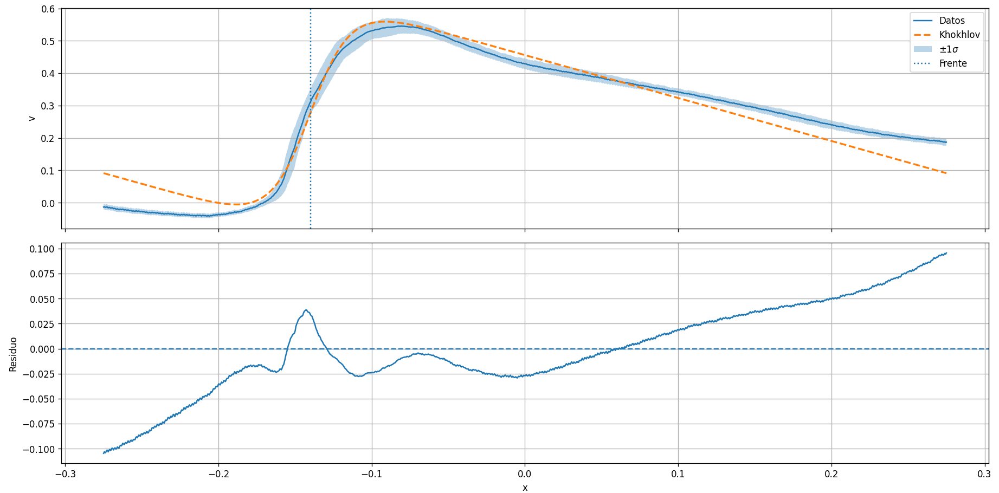
2026-09-11
[16:07]
Acá un ajuste con la solución más general de Burgers que está más abajo.
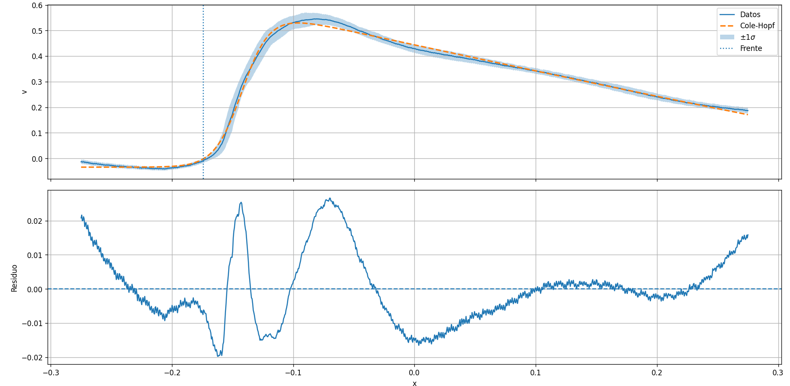
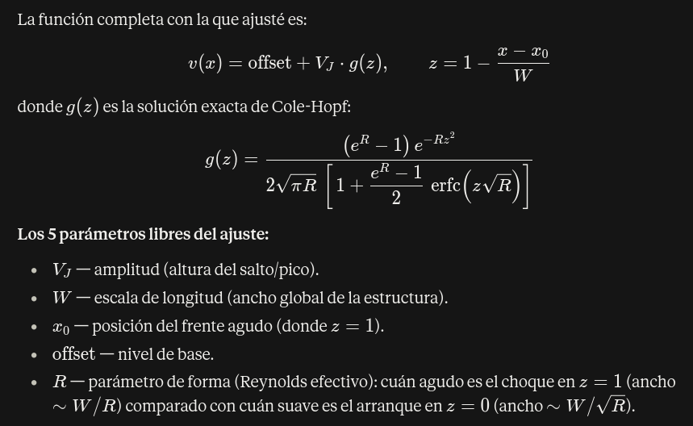
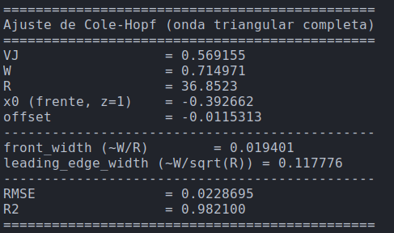
[16:15]
Y acá el mismo ajuste para las mediciones de ondas individuales:
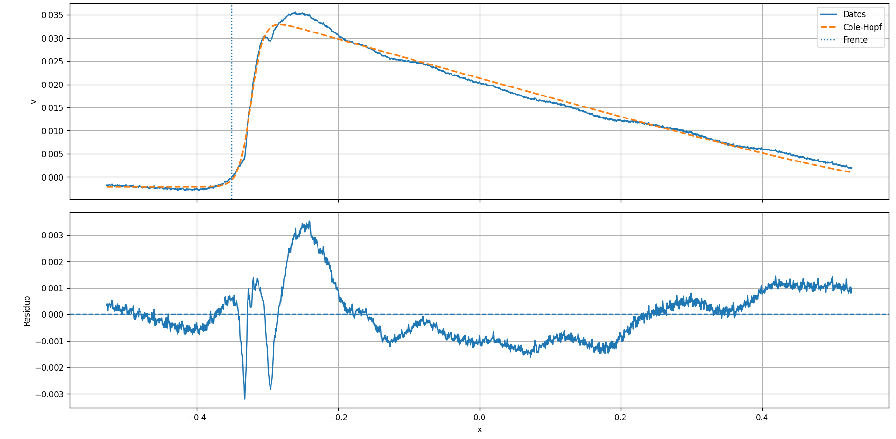
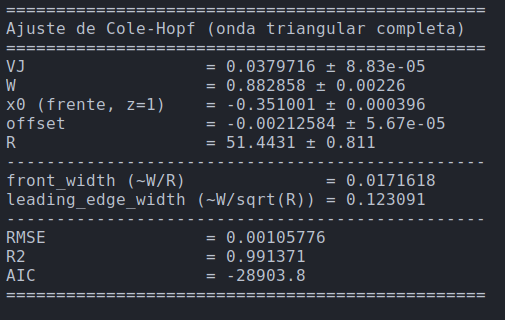
[16:28]
Esta solución está en la página 101 de (Whitham 1976).